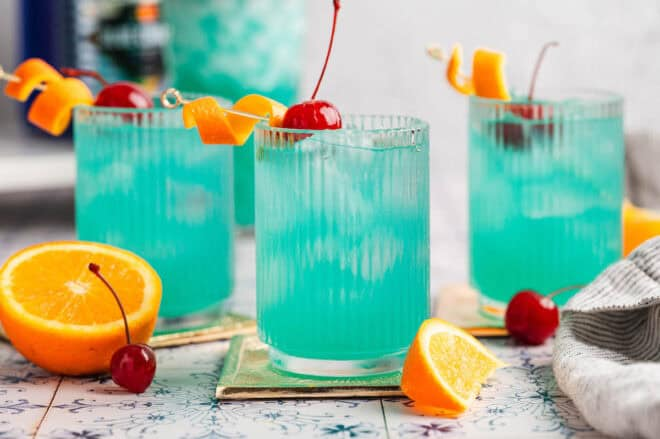

Want to serve Blue Drinks for a themed party? These super easy blue cocktail drinks have a vibrant color and are so refreshing.
Enter your email and we'll send this recipe to your inbox.
Fill cocktail shaker or beaker with ice. Add blue curaçao, vodka, orange juice and soda and stir well.
Filled two double old fashioned glasses with fresh ice and strain drink over ice. Serve immediately.
Calories: 131kcal, Carbohydrates: 11g, Protein: 0.2g, Fat: 0.03g, Saturated Fat: 0.01g, Polyunsaturated Fat: 0.01g, Monounsaturated Fat: 0.01g, Sodium: 6mg, Potassium: 29mg, Fiber: 0.03g, Sugar: 9g, Vitamin A: 28IU, Vitamin C: 7mg, Calcium: 3mg, Iron: 0.04mg
This website provides estimated nutrition information as a courtesy only. You should calculate the nutritional information with the actual ingredients used in your recipe using your preferred nutrition calculator.